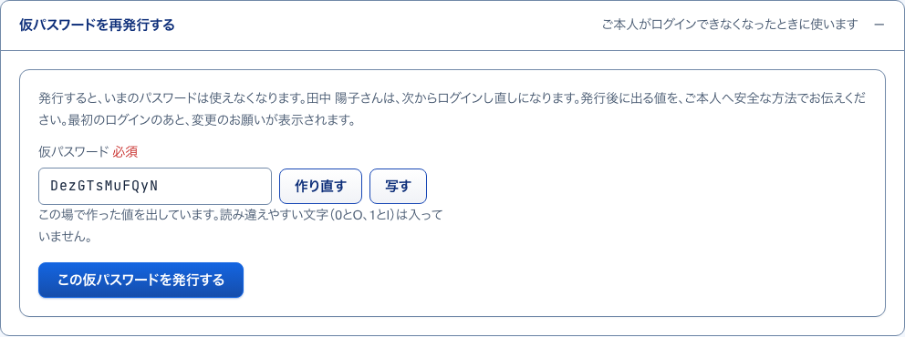
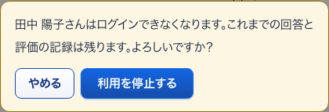
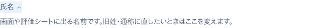

7CSVの書き方小窓
S24 社員 ・ 押すもの: 「CSVの書き方を見る」 ・ 閉じる: 閉じる
中に出るもの
- 1行目に見出しを入れる
- 列の順: 氏名・メールアドレス・社員番号・役割・等級・事業所・所属・上長・入社日・利用状態
- 上長は氏名・メール・社員番号のどれでもよい
- 同じファイルの中の人も上長にできる
- メールが同じ人は更新する
中で押せるもの
- 閉じる: 小窓を閉じる
8取り込みの結果押したあとに出る
S24 社員 ・ 押すもの: 「まず内容を確認する」
中に出るもの
- 氏名
- 結果（新規作成・更新・エラー）
- 行
- メールアドレス
- 内容
- まだ保存していないことの知らせ
中で押せるもの
- この内容を取り込む: 全行が正しいときだけ保存する
9今回発行した仮パスワード押したあとに出る
S24 社員 ・ 押すもの: 「この内容を取り込む」 ・ 押すと保存や送信が起きるので、写真は載せていない
中に出るもの
- 取り込みの結果の表
- 新しく作った人の氏名・メールアドレス・仮パスワード（今回だけ）
- 控えは社員一覧の各行から開けること
中で押せるもの
- 仮パスワード一覧を保存する: 一覧をファイルに保存する
10仮パスワードを再発行する開いて見る
S25 社員1人 ・ 押すもの: 「仮パスワードを再発行する」

中に出るもの
- 仮パスワード（その場で作った値）
- 読み違えやすい文字（0とO、1とl）は入っていないこと
中で押せるもの
- 作り直す: 値を作り直す
- 写す: 値を写す
- この仮パスワードを発行する: その人の新しいパスワードにする
11発行した控え押したあとに出る
S25 社員1人 ・ 押すもの: 「この仮パスワードを発行する」 ・ 閉じる: 控えを隠す ・ 押すと保存や送信が起きるので、写真は載せていない
中に出るもの
- 発行した仮パスワード（一度だけ）
中で押せるもの
- 仮パスワードの控えを見る: 控えを出す
- 控えを隠す: 控えを隠す
- 次の入力を始める: 欄を戻す
12利用を停止する確かめる小窓
S25 社員1人 ・ 押すもの: 「利用を停止する」 ・ 閉じる: やめる

中に出るもの
- （氏名）さんはログインできなくなります。これまでの回答と評価の記録は残ります。よろしいですか？
中で押せるもの
- 利用を停止する: ログインできなくする
- やめる: 小窓を閉じる
13この会社の所属を外す確かめる小窓
S25 社員1人 ・ 押すもの: 「この会社の所属を外す」 ・ 閉じる: やめる
中に出るもの
- （氏名）さんは、この会社の画面に入れなくなります。ほかの会社の所属はそのまま残ります。よろしいですか？
中で押せるもの
- この会社の所属を外す: この会社の所属だけを外す
- やめる: 小窓を閉じる
14氏名の説明開いて見る
S26 本人が変更できる項目 ・ 押すもの: 「氏名」

中に出るもの
- 画面や評価シートに出る名前です。旧姓・通称に直したいときはここを変えます。